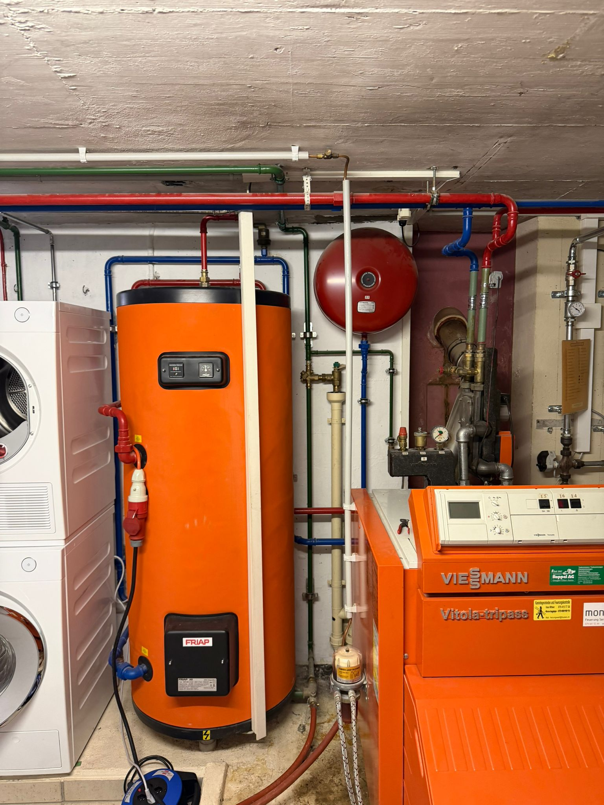

Lüftungsanlagen
Wartung, Sichtkontrollen und technische Prüfung relevanter Komponenten.
Instandhaltung
TRUE HLK unterstützt Betreiber mit wiederkehrender Instandhaltung, strukturierten Kontrollen und einem Pikettdienst für dringende Situationen.

Betriebssicherheit
Instandhaltung ist kein Nebenjob. Anlagen brauchen klare Intervalle, nachvollziehbare Kontrollen und jemanden, der die technischen Zusammenhänge versteht.
Wartung, Sichtkontrollen und technische Prüfung relevanter Komponenten.
Strukturierte Kontrollen in sensiblen technischen Umgebungen.
Probenahmen und klare Abläufe für hygienisch relevante Anforderungen.
Erreichbarkeit für dringende Störungen und kritische technische Situationen.

Dokumentation
Jede Wartung muss im Betrieb später verständlich bleiben. Wir arbeiten mit klaren Wartungsplänen, sauberer Rückmeldung und direkter Kommunikation.
Ablauf
Anlagen, Intervalle und kritische Punkte werden sauber erfasst.
Wir definieren Wartungstermine, Prüfungen und Zuständigkeiten.
Die Arbeiten werden strukturiert und nachvollziehbar ausgeführt.
Sie erhalten klare Hinweise, was erledigt wurde und was ansteht.